1. Где вы видите три фазы
Дома почти всё работает от 220 В: вилка с двумя штырями. А в мастерской у станков, компрессора, сварочных выпрямителей и полуавтоматов вилки большие, с четырьмя-пятью контактами, и там 380 В. Это трёхфазная сеть.
- Мастерская: станки, компрессор, сварочные выпрямители и полуавтоматы.
- Дом: в подъезд приходят три фазы, каждая квартира подключена к одной фазе и нулю.
- Энергосистема: генераторы электростанций, линии и трансформаторы — всё трёхфазное. Посмотрите на опору высоковольтной линии: проводов 3 или 6.
2. Три волны через 120°
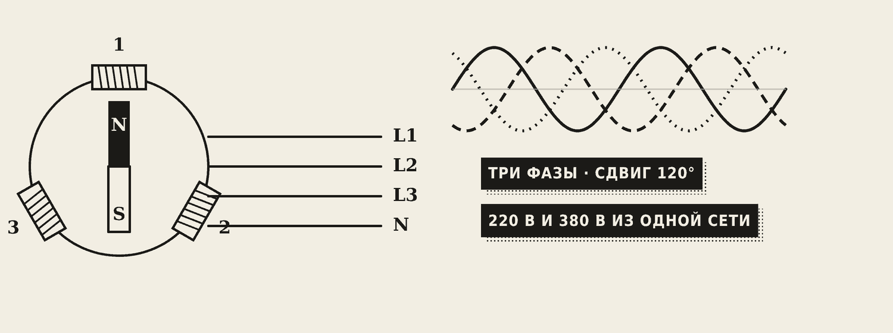
В генераторе не одна обмотка, а три. Они расположены по кругу через 120°, внутри вращается магнит. Он по очереди проходит мимо каждой обмотки — и в каждой появляется своё напряжение. Получаются три одинаковые волны, сдвинутые на треть периода — на 120°.
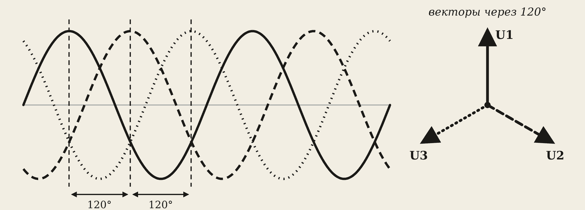
Посмотрите: три вектора вращаются вместе, их проекции рисуют три синусоиды, а сумма мгновенных значений всё время равна нулю.
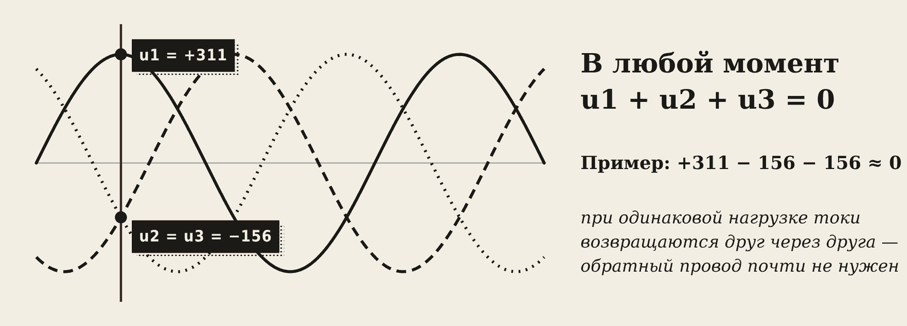
Запомните
Главное свойство трёх фаз: в любой момент сумма трёх напряжений (и токов при одинаковой нагрузке) равна нулю. Когда одна фаза на максимуме +311 В, две другие — по −156 В. Ток уходит по одной фазе и возвращается по двум другим — обратный провод почти не нужен.
3. Пять проводов
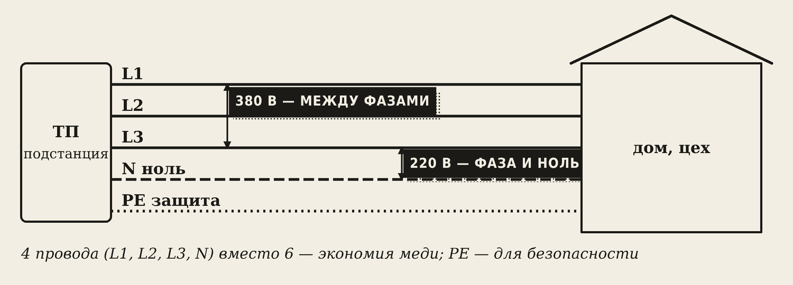
- L1, L2, L3 — фазы. Цвета: коричневый, чёрный, серый.
- N — нулевой рабочий провод. Голубой.
- PE — защитный провод, идёт к корпусам приборов. Жёлто-зелёный. В работе не участвует — он спасает при пробое изоляции.
Между фазой и нулём — 220 В. Между двумя фазами — 380 В. Одна сеть даёт сразу два напряжения.
Осторожно
380 В намного опаснее 220 В. Работы с трёхфазной сетью — только электрикам с допуском.
Зачем три фазы?
- Меньше проводов — ток возвращается по соседним фазам: 3–4 провода вместо 6.
- Вращающееся поле — три обмотки двигателя создают поле, которое само вращается. Отсюда простые и надёжные асинхронные двигатели.
- Два напряжения — 220 В для квартир и 380 В для станков и сварки.
4. Соединение звездой
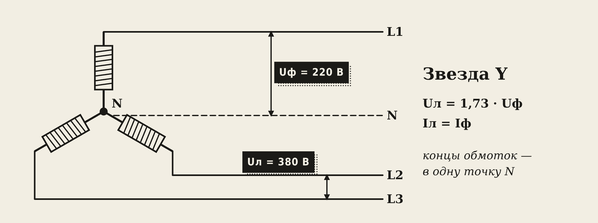
Звезда (Y): концы трёх обмоток соединяют в одну точку — нейтраль N. От неё идёт нулевой провод, от начал обмоток — фазы.
- Фазное напряжение Uф — между фазой и нулём, 220 В.
- Линейное напряжение Uл — между двумя фазами, 380 В.
Uл = 1,73 · Uф Iл = Iф
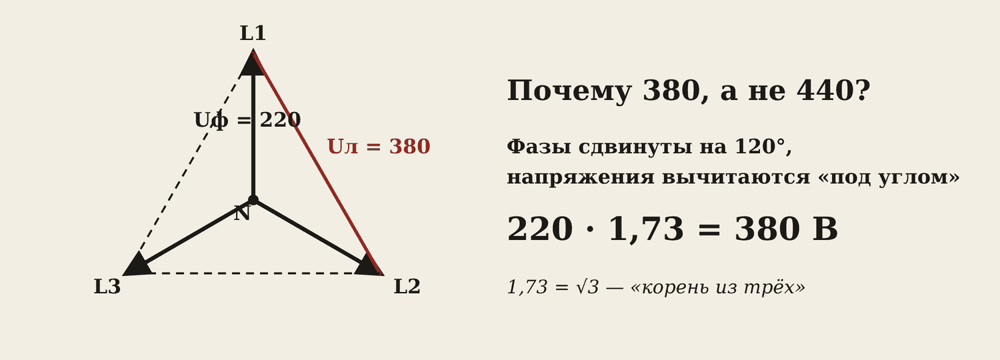
Почему 380, а не 440? Между двумя фазами напряжения вычитаются, но не как числа, а под углом 120°. Сторона получившегося треугольника длиннее вектора в √3 = 1,73 раза: 220 · 1,73 = 380 В.
5. Обрыв нуля
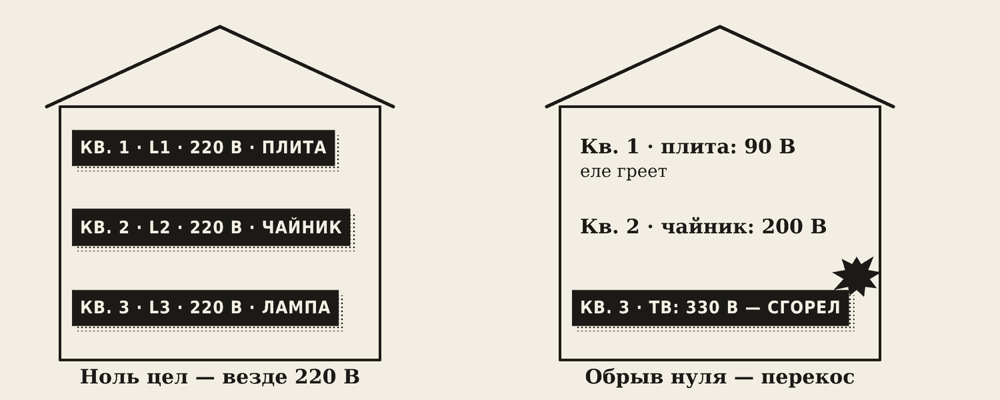
В подъезде квартиры разбросаны по фазам, и нагрузка на фазах всегда разная: у кого-то плита, у кого-то одна лампочка. Нулевой провод выравнивает напряжения: пока он цел, в каждой квартире 220 В.
Если ноль оборвался, точка звезды «уезжает»: где нагрузка большая, напряжение падает (лампы тусклые), где маленькая — растёт почти до 380 В. Горят телевизоры, зарядки, холодильники.
Осторожно
Поэтому в нулевой провод не ставят предохранители и выключатели — их срабатывание и есть обрыв нуля.
6. Соединение треугольником
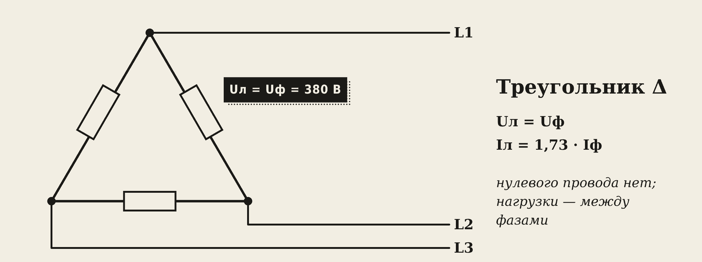
Треугольник (Δ): нагрузки соединены по кругу, конец одной — с началом следующей. Каждая сторона стоит между двумя фазами и получает полные 380 В. Нулевого провода нет.
Uл = Uф Iл = 1,73 · Iф
Что выбрать: нагрузка рассчитана на 220 В и нужен ноль — звезда (квартиры, освещение). Нагрузка на 380 В — треугольник (мощные двигатели, печи).
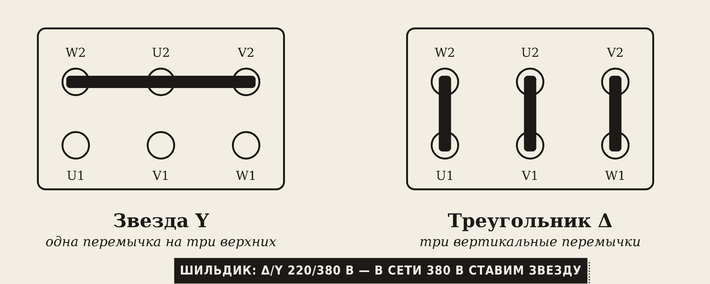
Клеммник двигателя. В коробке выводов шесть болтов — начала и концы трёх обмоток. Перемычками собирают звезду или треугольник. Смотрят на шильдик: «Δ/Y 220/380 В» — обмотка на 220 В, в сети 380 В ставим звезду. «Δ/Y 380/660 В» — ставим треугольник.
7. Мощность
P = 1,73 · Uл · Iл · cos φ
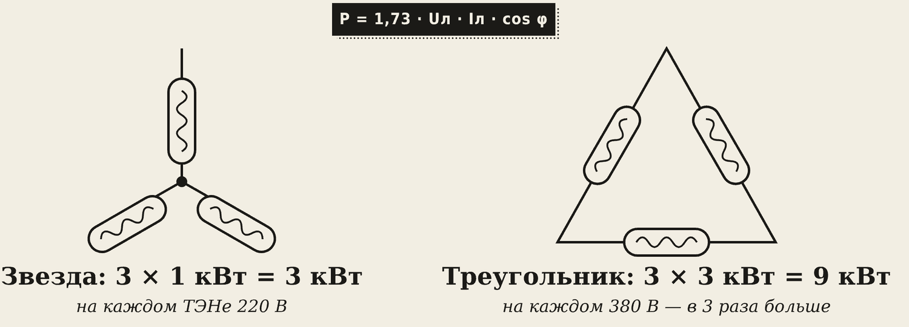
Пример. Двигатель: Uл = 380 В, Iл = 10 А, cos φ = 0,85. P = 1,73 · 380 · 10 · 0,85 ≈ 5,6 кВт.
Одни и те же ТЭНы в треугольнике дают в 3 раза больше мощности, чем в звезде: напряжение на каждом в 1,73 раза больше, а мощность растёт как квадрат напряжения.
8. Как подключают сварочное оборудование
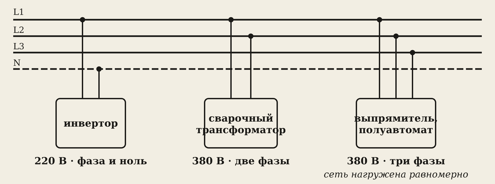
- Бытовой инвертор — фаза и ноль, 220 В.
- Сварочный трансформатор — две фазы, 380 В. Нагружает только две фазы — перекос.
- Выпрямители и полуавтоматы — три фазы, 380 В: сеть нагружается равномерно.
Если в цехе несколько сварочных трансформаторов, их подключают к разным парам фаз (L1–L2, L2–L3, L3–L1), чтобы фазы были нагружены одинаково.
Подключают через автомат и разъём или рубильник; сечение кабеля — по току; корпус аппарата — обязательно к защитному проводу PE.
Словарик
- Фаза — один из трёх проводов под напряжением (L1, L2, L3); также одна из обмоток генератора.
- Нейтраль, ноль N — общая точка звезды и нулевой рабочий провод.
- PE — защитный провод к корпусам, жёлто-зелёный.
- Фазное напряжение Uф — между фазой и нулём, 220 В.
- Линейное напряжение Uл — между двумя фазами, 380 В.
- Звезда Y — концы обмоток (нагрузок) в одну точку.
- Треугольник Δ — обмотки (нагрузки) по кругу, каждая между двумя фазами.
- Симметричная нагрузка — одинаковая на всех трёх фазах.
- Перекос фаз — разная нагрузка на фазах.
- 1,73 (√3) — коэффициент между линейными и фазными величинами.
Эталоны в тетрадь
Перепишите в тетрадь по билетам — каждый эталон на отдельную страницу, с рисунком и строкой «Мой пример».
Трёхфазная система
Трёхфазная система: получение, трёхфазный генератор, сдвиг фаз 120°. Преимущества.
- Трёхфазная система — три переменных напряжения одинаковой частоты, сдвинутые друг относительно друга на 120° (на треть периода). (Нарисуйте три синусоиды.)
- Получают трёхфазным генератором: три обмотки расположены по кругу через 120°, внутри вращается магнит.
- Провода: L1, L2, L3 — фазы; N — ноль; PE — защитный провод.
- Преимущества: экономия проводов; легко получить вращающееся поле для двигателей; сразу два напряжения — 220 и 380 В.
- Пример: в жилой дом приходят три фазы, квартиры подключены к разным фазам; станки в мастерской работают от трёх фаз.
Соединение «звездой»
Соединение «звездой»: фазные и линейные напряжения и токи, роль нулевого провода. Обрыв нуля.
- Звезда (Y): концы трёх обмоток соединены в одну точку (нейтраль), от начал идут фазные провода. (Схема.)
- Фазное напряжение — между фазой и нулём (220 В). Линейное — между двумя фазами (380 В). Uл = 1,73·Uф.
- Токи: Iл = Iф.
- Нулевой провод выравнивает напряжения, когда нагрузка на фазах разная (в одной квартире включена плита, в другой — только лампочка).
- Обрыв нуля: в одних квартирах напряжение падает, в других растёт почти до 380 В — сгорает техника. Поэтому в нулевой провод не ставят предохранители.
Соединение «треугольником»
Соединение «треугольником»: соотношения токов и напряжений. Когда звезда, когда треугольник.
- Треугольник (Δ): конец одной обмотки соединён с началом следующей, нулевого провода нет. (Схема.)
- Напряжения: Uл = Uф — на каждой нагрузке 380 В.
- Токи: Iл = 1,73·Iф (при одинаковой нагрузке).
- Звезда — когда нагрузка рассчитана на 220 В и нужен ноль (квартиры, освещение). Треугольник — когда нагрузка рассчитана на 380 В (мощные двигатели, печи).
- На клеммнике двигателя перемычки ставят «звездой» или «треугольником» — смотрят по шильдику (например, Δ/Y 220/380 В).
Мощность трёхфазной цепи, подключение сварки
Мощность трёхфазной цепи. Подключение сварочного оборудования к трёхфазной сети.
- Мощность при одинаковой нагрузке фаз: P = 3·Pф = 1,73·Uл·Iл·cos φ.
- Одни и те же нагреватели в «треугольнике» дают в 3 раза больше мощности, чем в «звезде».
- Сварочное оборудование: бытовые инверторы — от 220 В (фаза и ноль); промышленные трансформаторы — от 380 В (две фазы); выпрямители и полуавтоматы — от трёх фаз, они нагружают сеть равномерно.
- Подключают через автомат и разъём (рубильник). Корпус аппарата обязательно заземляют.
Проверь себя
Сначала ответьте сами — в тетради или вслух. Потом нажмите на вопрос, чтобы увидеть ответ.
1На сколько градусов сдвинуты фазы?
На 120° — треть периода.
2Чему равна сумма напряжений трёх фаз в любой момент?
Нулю.
3Какое напряжение между двумя фазами, если фазное 220 В?
220 · 1,73 ≈ 380 В.
4В каком соединении на каждой нагрузке 380 В?
В треугольнике.
5Почему в нулевой провод не ставят предохранитель?
Его срабатывание — это обрыв нуля: напряжения на фазах разъедутся, техника сгорит.
6Шильдик двигателя «Δ/Y 220/380 В», сеть 380 В. Как соединить обмотки?
Звездой: обмотка рассчитана на 220 В.
7Uл = 380 В, Iл = 5 А, cos φ = 0,8. Найдите мощность.
P = 1,73 · 380 · 5 · 0,8 ≈ 2,6 кВт.
8Три ТЭНа в звезде дают 3 кВт. Сколько дадут в треугольнике (если рассчитаны на 380 В)?
9 кВт — в 3 раза больше.
9Как подключают сварочный трансформатор и почему его лучше «раскидывать» по разным парам фаз?
К двум фазам, 380 В. Разные пары фаз — чтобы нагрузка на фазах была одинаковой.
Попробуйте в лаборатории
Откройте на телефоне или компьютере — ничего устанавливать не нужно.
Ответы к «Проверь себя»
- На 120° — треть периода.
- Нулю.
- 220 · 1,73 ≈ 380 В.
- В треугольнике.
- Его срабатывание — это обрыв нуля: напряжения на фазах разъедутся, техника сгорит.
- Звездой: обмотка рассчитана на 220 В.
- P = 1,73 · 380 · 5 · 0,8 ≈ 2,6 кВт.
- 9 кВт — в 3 раза больше.
- К двум фазам, 380 В. Разные пары фаз — чтобы нагрузка на фазах была одинаковой.